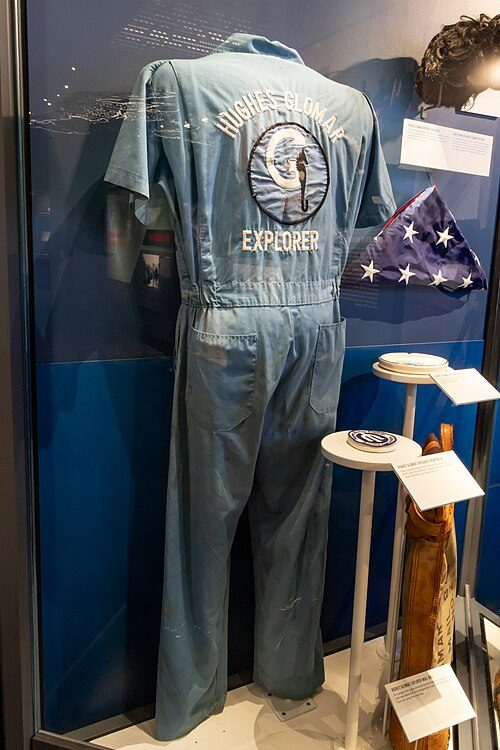

FILE PROJECT/AZORIAN // 1974
Project AZORIAN
The Glomar Explorer attempted a secret deep-ocean recovery of the Soviet submarine K-129. The ship recovered a portion before the hull broke apart; claims of total recovery and complete codebooks overstate public evidence.


CASE ANALYSIS
What the record supports
CLAIM AND BOUNDARY
AZORIAN was a CIA project to recover Soviet submarine K-129 using the Glomar Explorer. The project was real, not just a cover story. The popular claim that the United States raised the entire submarine and all of its codebooks is contradicted by official history describing a partial recovery after the hull broke during the lift.
CHRONOLOGY AND CONTEXT
K-129 sank in 1968. The CIA developed a deep-ocean salvage system disguised as seabed mining. In 1974 the ship attempted to lift the submarine from several kilometers below. Much of the hull slipped from the grasping system; a portion was recovered before public exposure the following year.
DOCUMENTARY EVIDENCE
CIA histories, engineering records, ship documentation, and contemporary reporting establish the project and partial recovery. The agency’s public account acknowledges that the forward section was retrieved while the main hull was lost. The episode also produced the ‘Glomar response,’ a refusal to confirm or deny sensitive information.
CONTRARY EVIDENCE AND ALTERNATIVES
CIA accounts may emphasize technical success, while Soviet and Russian statements may understate it. Recovering part of a vessel does not establish that nuclear weapons or complete cryptographic materials were secured. Each object claim requires evidence; secrecy alone cannot fill in what was recovered.
UNCERTAINTY
Contents and the fate of recovered material remain classified. Public film and records are incomplete, and accounts differ about which section contained particular equipment. Recovery of crew remains is documented, but claims about specific weapons, codes, or intelligence breakthroughs remain less certain.
CALIBRATED ASSESSMENT
AZORIAN was an extraordinary covert engineering operation with a partial, not total, recovery. Evidence rejects both ‘nothing was recovered’ and ‘the whole submarine was raised intact.’ Secrecy explains limited disclosure but does not warrant confident stories about unrevealed artifacts.
WHAT WOULD CHANGE THIS
Authenticated inventories, lift logs, and independently verifiable records could establish specific recovered items. Further technical disclosure might revise details. A ship photograph or government refusal to answer does not establish the identity or contents of an object.
DOCUMENT TRAIL
Sources & limitations
- CIA, Project AZORIAN historyOfficial account confirms partial recovery while retaining classified detail and agency perspective.
- National Archives, Navy recordsArchival guide supports research into submarine and naval records; relevant files are not all public.
- National Security Archive, AZORIANCurated documents offer external context; recovered-object claims remain limited by declassification.